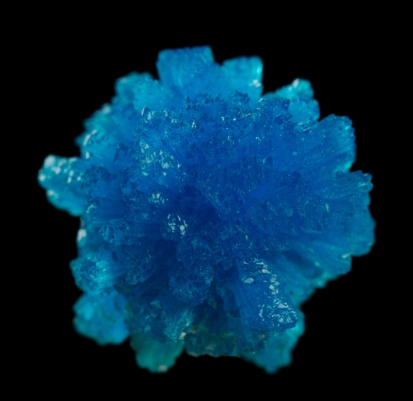

Эйнштейний

Эйнште́йний (химический символ — Es,от лат.Einsteinium) — химический элемент с атомным номером 99. Является элементом с самым большим атомным номером, который был получен в весовых количествах. Ежегодно производится несколько миллиграммов эйнштейния.Простое вещество эйнштейний — это радиоактивный трансурановый металл серебристого цвета. Относится к семейству актиноидов.
Эйнштейний был открыт в декабре 1952 года в радиоактивных осадках, оставшихся после испытания «Иви Майк». Элемент назван в честь Альберта Эйнштейна.В 1961 году был получен первый макроскопический образец эйнштейния массой 0,01 мкг
Изотопы эйнштейния получают облучением лёгких актиноидов нейтронами, α-частицами или ионами. Изотоп 254Es (Т1/2 276 суток, α-излучатель) используют при калибровке спектрометров для химического анализа.